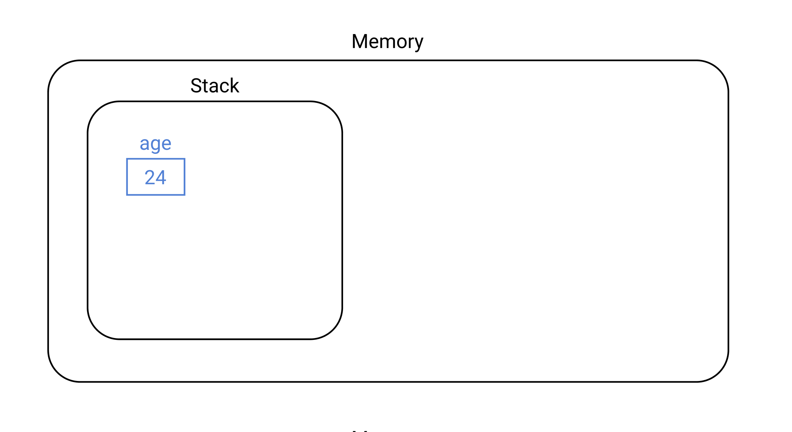
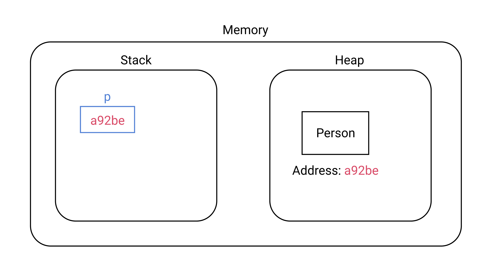
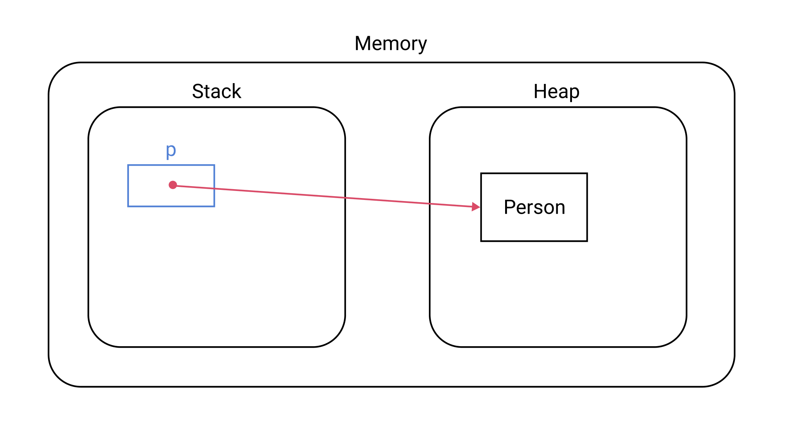

[Java] 원시 타입(Primitive type)과 참조 타입(Reference type)
Java에는 크게 두 종류의 자료형이 있다.
- 원시 타입(Primitive Type)
- 참조 타입(Reference Type)
원시 타입
Java가 제공하는 원시 타입(Primitive type)은 다음과 같다.
- byte
- short
- int
- log
- float
- double
- boolean
- char
원시 타입은 스택(Stack)이라는 메모리 영역에 저장된다. 예를 들어 코드가 다음과 같다면
1 | int age = 35; |
메모리에 다음과 같은 형태로 저장된다.

참조 타입
원시 타입을 제외한 모든 타입을 참조 타입(Referencee type)이라고 한다. Array, List, Enum, Interface 등이 참조 타입에 포함된다.
참조 타입은 힙(Heap)이라는 메모리 영역에 저장된다. 예를 들어 코드가 다음과 같다면
1 | Person p = new Person("Paul", 33); |
메모리에 다음과 같은 형태로 저장된다.

다시 말해 객체 자체는 힙 영역에 생성되며, 스택에 생성된 변수에는 객체의 주소값을 담고 있다. 좀 더 추상적으로 표현하자면 다음과 같다.
